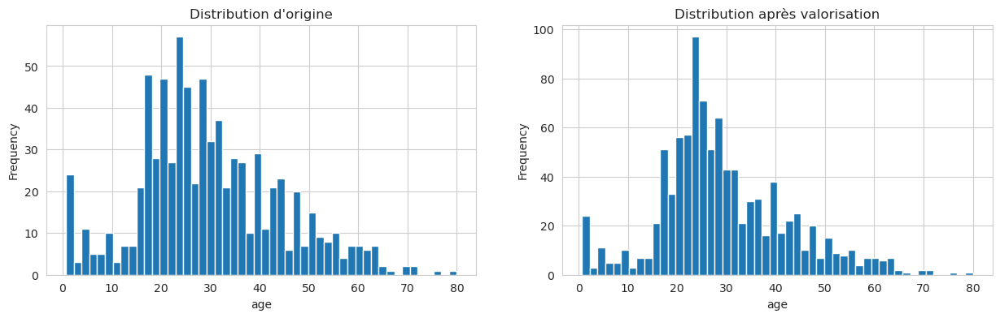

Traitement des valeurs manquantes — compléments#
Pourquoi un chapitre « compléments » ?#
Dans le notebook basique (05-feature-engineering-basics/02-feature-engineering-basics), on avait vu la méthode « universelle » :
Numérique manquant → imputer par la médiane.
Catégoriel manquant → imputer par le mode (valeur la plus fréquente).
C’est simple, rapide et robuste. Pour beaucoup de problèmes réels, c’est suffisant. Mais ce n’est pas toujours la meilleure approche — et ce notebook explique quand et comment faire mieux.
L’analogie à garder en tête : quand un médecin remplit un formulaire et qu’il ne connaît pas le poids exact du patient, il peut soit :
Mettre le poids moyen de la population (solution paresseuse mais simple).
Estimer à partir du contexte : un homme de 1m85 et 35 ans sportif pèse probablement plus qu’une femme de 1m55 et 70 ans. (solution intelligente mais demande plus d’information).
La deuxième approche est toujours meilleure quand elle est possible. Ce notebook montre comment l’appliquer au Titanic.

Les trois types de valeurs manquantes (cadre MCAR / MAR / MNAR)#
Avant de traiter les NaN, il faut comprendre pourquoi ils manquent. Les statisticiens distinguent trois cas, aux conséquences très différentes :
MCAR — Missing Completely At Random#
La valeur manque de façon purement aléatoire, sans lien avec quoi que ce soit. Exemple : un capteur de température qui plante au hasard une fois par mois.
Conséquence : imputer par la médiane/mode est OK, c’est la situation la plus simple.
C’est rarement le cas en vrai.
MAR — Missing At Random#
La valeur manque, mais la probabilité qu’elle manque dépend d’autres variables observées (pas de la valeur manquante elle-même).
Exemple : « les passagers en 3ème classe ont plus souvent un âge manquant parce qu’ils ont été enregistrés plus rapidement ». L’absence d’âge est liée à la classe — pas à l’âge réel.
Conséquence : on peut imputer intelligemment en utilisant les autres variables pour estimer la valeur manquante.
C’est le cas le plus fréquent en pratique. C’est sur ce cas qu’on va travailler dans ce notebook.
MNAR — Missing Not At Random#
L’absence de valeur dépend de la valeur elle-même. Exemple : les gens à très hauts revenus refusent plus souvent de déclarer leurs revenus. L’absence est liée à la valeur manquante.
Conséquence : c’est le cas le plus difficile. Aucune imputation n’est parfaite, et toute analyse est potentiellement biaisée. Dans ce cas, la présence du NaN est elle-même une information — il faut souvent ajouter une variable indicatrice
was_missingpour permettre au modèle de l’exploiter.
🎯 À retenir : avant d’imputer, toujours se poser la question « pourquoi cette valeur manque-t-elle ? ». La réponse guide le choix de la méthode — et détermine si les conclusions du modèle seront fiables.
Le plan de ce notebook#
Split stratifié pour préserver l’équilibre des classes.
Imputation intelligente de
age,fare,embarkeden utilisant les corrélations entre variables (approche MAR).Comparaison avec l’approche naïve du chapitre précédent.
Le principe général : exploiter les relations entre variables pour donner aux imputations un sens qui se rapproche de la réalité.
import warnings
warnings.simplefilter(action='ignore', category=FutureWarning)
import numpy as np
import matplotlib.pyplot as plt
import seaborn as sns
import pandas as pd
sns.set_style('whitegrid')
from sklearn.datasets import fetch_openml
from sklearn.model_selection import train_test_split
from sklearn.linear_model import LogisticRegression
from sklearn.model_selection import cross_val_score
titanic = fetch_openml("titanic", version=1, as_frame=True)
titanic1 = titanic.data
survived = titanic.target.astype(np.int8)
Création des jeux d’apprentissage et de test#
⚠️ Rappel critique : on splitte avant toute analyse ou transformation. Sinon, on risque le data leakage — les moyennes/médianes/corrélations calculées sur le test vont « fuiter » dans le train et fausser les scores.
X1_train, X1_test, y_train, y_test = train_test_split(
titanic1,
survived,
test_size=0.25,
random_state=2
)
Vérification basique de la distribution des labels sur train et test. L’idée : s’assurer que les deux jeux ont à peu près la même proportion de survived=True — sinon, notre train n’est pas représentatif de notre test.
survived.mean(), y_train.mean(), y_test.mean()
(0.3819709702062643, 0.3934760448521916, 0.3475609756097561)
Observation : il y a trop peu de survived=True dans y_test par rapport à y_train. Le tirage aléatoire a donné un split déséquilibré par hasard — c’est fréquent sur des petits datasets avec des classes déséquilibrées.
La solution : le split stratifié#
Au lieu de tirer les lignes purement au hasard, on utilise stratify=y dans train_test_split. Scikit-learn s’assure alors que la proportion de chaque classe est préservée dans le train et dans le test.
Mental model : imagine un sac avec 80 boules blanches et 20 rouges. Un tirage aléatoire peut te donner 20 rouges dans le premier paquet et 0 dans le second. Un tirage stratifié garantit que chaque paquet aura la même proportion (80/20).
À utiliser systématiquement en classification, surtout sur des classes déséquilibrées. C’est une correction gratuite qui n’a aucun inconvénient.
X1_train, X1_test, y_train, y_test = train_test_split(
titanic1,
survived,
test_size=0.25,
stratify=survived,
random_state=2
)
On vérifie à nouveau la distribution. Cette fois, les proportions de survived=True doivent être quasi identiques entre y_train et y_test — c’est ce qu’on voulait.
survived.mean(), y_train.mean(), y_test.mean()
(0.3819709702062643, 0.382262996941896, 0.38109756097560976)
Feature selection — suppression des colonnes inutiles#
Conformément aux choix faits dans les notebooks d’EDA précédents, on commence par supprimer plusieurs colonnes :
cabin,home.dest: trop de NaN, inexploitables en l’état.boat,body: ⚠️ fuites de données (encodent directement la target).name,ticket: trop haute cardinalité, non exploitables sans feature engineering poussé.
On se ramène ainsi aux seules colonnes vraiment exploitables : pclass, sex, age, sibsp, parch, fare, embarked.
def drop_columns(X_df):
return X_df.drop(
["cabin", "home.dest", "boat", "body", "name", "ticket"], axis=1
)
X2_train = drop_columns(X1_train)
Data cleaning — valorisation (imputation) des données manquantes#
État des lieux#
Avant d’imputer, on regarde ce qu’on a avec info() et describe(). Objectif : identifier les colonnes qui ont des NaN et estimer l’ampleur du problème.
X2_train.info()
<class 'pandas.core.frame.DataFrame'>
Index: 981 entries, 3 to 1117
Data columns (total 7 columns):
# Column Non-Null Count Dtype
--- ------ -------------- -----
0 pclass 981 non-null float64
1 sex 981 non-null category
2 age 771 non-null float64
3 sibsp 981 non-null float64
4 parch 981 non-null float64
5 fare 980 non-null float64
6 embarked 980 non-null category
dtypes: category(2), float64(5)
memory usage: 48.2 KB
X2_train.describe()
| pclass | age | sibsp | parch | fare | |
|---|---|---|---|---|---|
| count | 981.000000 | 771.000000 | 981.000000 | 981.000000 | 980.000000 |
| mean | 2.288481 | 29.981626 | 0.506626 | 0.357798 | 31.928652 |
| std | 0.828916 | 14.331428 | 1.082894 | 0.812789 | 47.714293 |
| min | 1.000000 | 0.666700 | 0.000000 | 0.000000 | 0.000000 |
| 25% | 2.000000 | 21.000000 | 0.000000 | 0.000000 | 7.895800 |
| 50% | 3.000000 | 28.000000 | 0.000000 | 0.000000 | 14.454200 |
| 75% | 3.000000 | 39.000000 | 1.000000 | 0.000000 | 30.695800 |
| max | 3.000000 | 80.000000 | 8.000000 | 9.000000 | 512.329200 |
La colonne embarked#
Très peu de NaN (1 ou 2 lignes seulement). Dans ce cas, la stratégie simple marche très bien : imputer par la valeur la plus fréquente (le mode).
Sur le Titanic, c’est S (Southampton) — plus de 70% des passagers ont embarqué à ce port.
Pourquoi une approche naïve est OK ici ? Parce que le coût d’une erreur est très faible : si on met
Spour quelqu’un qui a vraiment embarqué à Cherbourg, l’impact sur le modèle est négligeable (seulement 1 ou 2 lignes concernées sur ~1300). Pas besoin de se compliquer la vie.
def impute_embarked(X_df):
return X_df["embarked"].fillna("S")
assert impute_embarked(X2_train).notnull().all()
La colonne fare#
Ici, on fait déjà mieux. Plutôt que d’imputer par la moyenne ou la médiane globale (ce qui donnerait la même valeur pour tout le monde), on exploite une corrélation connue : fare est fortement lié à pclass (les 1ères classes sont chères, les 3èmes sont bon marché).
L’idée : au lieu de dire « le prix moyen du billet est 33 £ » pour tout le monde, on dit « le prix moyen d’un billet de 1ère classe est 87 £, d’un billet de 3ème classe est 13 £ » et on impute selon la classe du passager.
C’est une imputation conditionnelle (aussi appelée group-by imputation). C’est une des techniques les plus simples et les plus efficaces quand on a une variable fortement corrélée au NaN à imputer.
On calcule donc la moyenne de fare par classe (sur le train uniquement), puis on impute en fonction de la classe du passager.
Référence : cette corrélation a été identifiée dans le notebook 04-understand-data/06-multivariate-stats via la matrice de corrélation de Spearman. C’est un exemple concret de la valeur de l’EDA multivariée faite en amont.
mean_fare_per_class = X2_train.groupby( "pclass")["fare"].mean()
mean_fare_per_class
pclass
1.0 82.752701
2.0 21.298985
3.0 13.410947
Name: fare, dtype: float64
def impute_fare(X_df):
return X2_train.apply(
lambda row: mean_fare_per_class[row["pclass"]] if np.isnan(row["fare"]) else row["fare"],
axis=1
)
assert impute_fare(X2_train).notnull().all()
La colonne age — le cas difficile#
age est la colonne la plus délicate : ~20% de NaN (beaucoup de valeurs manquantes) et elle est très prédictive (les enfants ont eu plus de chances de survivre).
On ne peut pas se contenter d’imputer par la médiane globale. On va d’abord comprendre pourquoi age est manquant, pour choisir une bonne stratégie.
Analyse 1 : lien entre age manquant et survived#
Question : les passagers dont l’âge est inconnu ont-ils le même taux de survie que les autres ?
y_train[X2_train["age"].notnull()].mean()
0.4085603112840467
y_train[X2_train["age"].isnull()].mean()
0.2857142857142857
Observation critique : les voyageurs dont l’âge est inconnu ont nettement moins survécu que les autres.
Interprétation : l’absence d”
agen’est pas aléatoire — elle est corrélée avec la cible à prédire. C’est le scénario MNAR ou au moins MAR dont on parlait en intro.Conséquence : une simple imputation par médiane globale ferait « comme si » ces passagers étaient comme les autres — ce qui est faux. On aurait perdu un signal prédictif potentiellement important.
Pattern à retenir : quand l’absence d’une variable est elle-même prédictive, il est souvent utile de créer une variable indicatrice
age_was_missingqui capture cette information — en plus de faire l’imputation.
Analyse 2 : lien entre age manquant et pclass#
Question complémentaire : est-ce que les passagers avec age manquant voyageaient dans une classe particulière ? Si oui, on pourra exploiter cette info pour imputer plus intelligemment.
X2_train[X2_train["age"].notnull()]["pclass"].value_counts()
pclass
3.0 356
2.0 212
1.0 203
Name: count, dtype: int64
X2_train[X2_train["age"].isnull()]["pclass"].value_counts()
pclass
3.0 163
1.0 33
2.0 14
Name: count, dtype: int64
Observation : les voyageurs dont l’âge est inconnu voyageaient majoritairement en 3ème classe. Et on sait qu’il existe une corrélation entre age et pclass (les riches étaient plus âgés en moyenne).
Confirmons cette corrélation en calculant l’âge moyen et l’écart-type par classe — on utilisera ces statistiques pour imputer.
Pourquoi aussi l’écart-type ? Parce que si on met exactement la moyenne à toutes les valeurs manquantes, on crée un artefact (un pic dans l’histogramme). Pour rendre l’imputation plus réaliste, on va tirer une valeur aléatoire autour de la moyenne (moyenne ± écart-type), ce qui préserve mieux la distribution naturelle.
mean_ages_class = X2_train.groupby("pclass")["age"].mean()
std_ages_class = X2_train.groupby("pclass")["age"].std()
mean_ages_class, std_ages_class
(pclass
1.0 39.778325
2.0 29.574292
3.0 24.637874
Name: age, dtype: float64,
pclass
1.0 14.287973
2.0 13.380506
3.0 11.802561
Name: age, dtype: float64)
Notre stratégie d’imputation de age :
Pour chaque passager avec
agemanquant, on regarde sa classe (pclass).On génère un âge aléatoire autour de la moyenne des âges de cette classe, en respectant son écart-type.
En pseudo-code :
si age est NaN pour le passager X de classe c :
age_imputé = tirer un nombre au hasard entre (moyenne_c - std_c) et (moyenne_c + std_c)
C’est une imputation conditionnelle avec bruit — à la fois contextuelle (dépend de la classe) et réaliste (préserve la distribution).
def get_age(row, mean_ages, std_ages):
pclass = row['pclass']
mean_age = mean_ages[pclass]
std_age = std_ages[pclass]
return np.random.normal(loc=mean_age, scale=std_age/4)
def impute_age(X_df, mean_ages, std_ages):
return X_df.apply(
lambda row: get_age(
row, mean_ages, std_ages
) if np.isnan(row["age"]) else row["age"],
axis=1
)
assert impute_age(X2_train, mean_ages_class, std_ages_class).notnull().all()
assert impute_age(X2_train, mean_ages_class, std_ages_class).iloc[0] == X2_train.iloc[0]["age"]
Vérifions l’effet sur la distribution. On trace l’histogramme de age avant et après imputation pour voir si la nouvelle distribution reste crédible.
Ce qu’on veut voir : une distribution proche de l’originale, sans pic artificiel à une valeur unique (ce qu’on aurait eu avec une simple imputation par la médiane).
fig, (ax1, ax2) = plt.subplots(1, 2, figsize=(15, 4))
X2_train["age"].plot(kind="hist", bins=50, ax=ax1)
ax1.set_title("Distribution d'origine")
ax1.set_xlabel("age")
impute_age(X2_train, mean_ages_class, std_ages_class).plot(kind="hist", bins=50, ax=ax2)
ax2.set_title("Distribution après valorisation")
ax2.set_xlabel("age");

Valorisation — la fonction complète#
On rassemble maintenant toutes nos stratégies d’imputation dans une seule fonction qui prend un DataFrame et en retourne une version sans NaN.
Pourquoi une fonction réutilisable ? Parce qu’on aura besoin d’appliquer exactement les mêmes transformations au train et au test. Une fonction qui prend le DataFrame en paramètre garantit qu’on ne se trompe pas.
⚠️ Piège à éviter : les statistiques d’imputation (moyennes par classe, valeur la plus fréquente pour
embarked) doivent être calculées sur le train uniquement et passées en paramètres à la fonction pour s’appliquer au test. Sinon, on calcule des stats sur le test et on fuite de l’information.
def impute_null_values(X_df, mean_ages, std_ages):
X_df["embarked"] = impute_embarked(X_df)
X_df["fare"] = impute_fare(X_df)
X_df["age"] = impute_age(X_df, mean_ages, std_ages)
return X_df
impute_null_values(X2_train.copy(), mean_ages_class, std_ages_class).head()
| pclass | sex | age | sibsp | parch | fare | embarked | |
|---|---|---|---|---|---|---|---|
| 3 | 1.0 | male | 30.000000 | 1.0 | 2.0 | 151.5500 | S |
| 798 | 3.0 | male | 26.691669 | 0.0 | 0.0 | 7.0500 | S |
| 38 | 1.0 | male | 41.000000 | 0.0 | 0.0 | 30.5000 | S |
| 367 | 2.0 | male | 52.000000 | 0.0 | 0.0 | 13.5000 | S |
| 803 | 3.0 | male | 26.000000 | 0.0 | 0.0 | 7.8792 | Q |
Numérisation des variables catégorielles#
Dernière étape avant l’entraînement : transformer sex et embarked (qui sont du texte) en nombres.
On utilise pd.get_dummies() (équivalent de OneHotEncoder pour pandas) avec drop_first=True pour éviter la colinéarité :
sex ∈ {male, female}→ une seule colonnesex_male(0 ou 1) suffit. Pas besoin d’une colonnesex_femaleredondante.embarked ∈ {S, C, Q}→ deux colonnesembarked_Cetembarked_Qsuffisent. La 3ème est implicite (si les deux autres sont à 0, c’estS).
Pourquoi
drop_first=True? Parce que dans une régression linéaire ou logistique, avoir \(n\) colonnes one-hot linéairement dépendantes (leur somme = 1) crée une colinéarité parfaite qui déstabilise le modèle. En supprimant une colonne par variable, on casse cette dépendance sans perdre d’information.
def convert_categorical(X_df, cols):
one_hot_encoded = pd.get_dummies(X_df[cols], drop_first=True)
return X_df.join(one_hot_encoded).drop(cols, axis=1)
convert_categorical(X2_train.copy(), ["sex", "embarked"]).info()
<class 'pandas.core.frame.DataFrame'>
Index: 981 entries, 3 to 1117
Data columns (total 8 columns):
# Column Non-Null Count Dtype
--- ------ -------------- -----
0 pclass 981 non-null float64
1 age 771 non-null float64
2 sibsp 981 non-null float64
3 parch 981 non-null float64
4 fare 980 non-null float64
5 sex_male 981 non-null bool
6 embarked_Q 981 non-null bool
7 embarked_S 981 non-null bool
dtypes: bool(3), float64(5)
memory usage: 81.1 KB
Fonction de prétraitement complète#
On peut maintenant enchaîner toutes les transformations en une seule fonction process_data() qui prend un DataFrame brut en entrée et en retourne une version prête pour l’entraînement :
Suppression des colonnes inutiles.
Imputation de
embarked,fare,age.One-hot encoding des variables catégorielles restantes.
Note importante : cette approche « fonction maison » est pédagogiquement utile pour voir étape par étape ce qui se passe. En production, on préfère un
Pipelinescikit-learn qui encapsule toutes ces étapes dans un objet réutilisable, compatible aveccross_val_scoreetGridSearchCV, et qui évite les fuites automatiquement.On reviendra sur les pipelines dans la suite du cours.
def process_data(X_df, mean_age, std_age, cat_cols):
X_df = drop_columns(X_df)
X_df = impute_null_values(X_df, mean_age, std_age)
return convert_categorical(X_df, cat_cols)
X_train = process_data(X1_train, mean_ages_class, std_ages_class, ["sex", "embarked"])
X_train.info()
<class 'pandas.core.frame.DataFrame'>
Index: 981 entries, 3 to 1117
Data columns (total 8 columns):
# Column Non-Null Count Dtype
--- ------ -------------- -----
0 pclass 981 non-null float64
1 age 981 non-null float64
2 sibsp 981 non-null float64
3 parch 981 non-null float64
4 fare 981 non-null float64
5 sex_male 981 non-null bool
6 embarked_Q 981 non-null bool
7 embarked_S 981 non-null bool
dtypes: bool(3), float64(5)
memory usage: 81.1 KB
Apprentissage#
On peut maintenant entraîner nos modèles sur les données enrichies et comparer à la baseline du notebook précédent (qui utilisait une imputation simple par médiane).
logreg_clf = LogisticRegression(C=0.8, max_iter=1000)
scores = cross_val_score(logreg_clf, X_train, y_train, cv=10)
scores, scores.mean(), scores.std()
(array([0.82828283, 0.76530612, 0.85714286, 0.76530612, 0.73469388,
0.82653061, 0.78571429, 0.84693878, 0.80612245, 0.83673469]),
0.8052772624201197,
0.038674378082799214)
Autres modèles#
On teste aussi un Random Forest — un modèle plus puissant et souvent plus tolérant au bruit d’imputation.
⚠️ Observation intéressante : les modèles à base d’arbres (Random Forest, XGBoost) sont moins sensibles à la qualité de l’imputation que les modèles linéaires (régression logistique). Pourquoi ? Parce qu’un arbre va juste créer une branche « age == valeur-imputée ? » qui regroupe tous les imputés — sans se laisser perturber par l’artefact. Les modèles linéaires, eux, prennent les valeurs « au sérieux » et peuvent être déstabilisés par un pic artificiel.
Conséquence pratique : l’imputation intelligente apporte typiquement plus de gain sur les modèles linéaires que sur les modèles à base d’arbres. Si tu vises XGBoost comme modèle final, n’investis pas trop de temps sur l’imputation — une médiane suffit souvent.
from sklearn.ensemble import RandomForestClassifier
rf_clf = RandomForestClassifier(max_depth=6, random_state=2, n_jobs=-1)
scores = cross_val_score(rf_clf, X_train, y_train, cv=10)
scores, scores.mean(), scores.std()
(array([0.83838384, 0.81632653, 0.89795918, 0.7755102 , 0.74489796,
0.85714286, 0.80612245, 0.79591837, 0.80612245, 0.81632653]),
0.8154710368996081,
0.04025148656639921)
Conclusion#
Bilan de ce notebook :
Pour les deux modèles (régression logistique et Random Forest), on observe une amélioration de la justesse moyenne et une réduction de la variabilité des scores en cross-validation.
L’écart est plus marqué pour la régression logistique, comme prévu (les modèles linéaires sont plus sensibles à la qualité de l’imputation).
Cela confirme que comprendre ses données paye : l’EDA multivariée du chapitre 4 nous a permis de faire des choix d’imputation éclairés, et ces choix se traduisent directement en gain de performance.
🎯 Pour résumer — imputation avancée en pratique#
Le principe général#
Une bonne imputation exploite les relations entre variables pour donner aux valeurs manquantes un sens qui se rapproche de la réalité. Plus on exploite de contexte (autres variables, cible, métier), plus on s’approche de la vraie valeur manquante — au lieu d’une approximation « moyenne-pour-tout-le-monde ».
Les 5 niveaux d’imputation (du plus simple au plus sophistiqué)#
Niveau |
Technique |
Quand l’utiliser |
|---|---|---|
1 |
Supprimer les lignes / colonnes |
Quand c’est 1-2% et que tu peux te le permettre |
2 |
Imputer par médiane / mode |
Baseline simple, rapide, « suffisante souvent » |
3 |
Imputer conditionnellement (group-by) |
Quand tu connais une corrélation entre NaN et autres variables |
4 |
Imputation itérative ( |
Quand plusieurs variables ont des NaN qui se recoupent |
5 |
KNN imputation, ML dédié ( |
Petits datasets complexes où la qualité d’imputation compte |
Les techniques sklearn à connaître#
SimpleImputer— niveau 2. Rapide, robuste, baseline.KNNImputer— niveau 5. Prend la moyenne des \(k\) voisins les plus proches (sur les autres features).IterativeImputer(expérimental) — niveau 4. Modélise chaque colonne avec NaN comme une régression sur les autres, itérativement.
Les bonnes pratiques#
✅ Toujours imputer, jamais supprimer sauf cas extrêmes (>50% de NaN).
✅ Comprendre pourquoi la valeur manque (MCAR / MAR / MNAR) avant de choisir une méthode.
✅ Calculer les statistiques d’imputation sur le train uniquement et les propager au test.
✅ Utiliser
stratify=ydanstrain_test_splitquand les classes sont déséquilibrées.✅ Vérifier visuellement l’effet de l’imputation sur la distribution (histogrammes avant/après).
✅ Ajouter une variable indicatrice
was_missingsi l’absence elle-même semble prédictive (cas MNAR).✅ En production, utiliser un
Pipelinescikit-learn qui encapsule imputation + encodage + modèle.
Les pièges à éviter#
⚠️ Calculer la médiane sur tout le dataset → data leakage entre train et test.
⚠️ Imputer avec la médiane sur une variable fortement biaisée par la classe (comme
ageavecpclassici) → perte d’information.⚠️ Imputer sans analyser le pattern de NaN → parfois, l’absence elle-même est le signal.
⚠️ Appliquer une fonction d’imputation « maison » au lieu d’un
Pipeline→ risque de désynchronisation entre train et test, bugs silencieux.
Le mot de la fin#
L’imputation, c’est un dialogue avec les données. Une médiane rapide convient pour 80% des cas. Pour les 20% restants — là où il y a beaucoup de NaN ou où ils encodent une information métier — investir du temps à comprendre pourquoi les valeurs manquent et comment les corréler aux autres variables peut faire passer un modèle de « correct » à « bon ». Mais attention au rendement décroissant : au-delà d’un certain point, raffiner l’imputation rapporte moins qu’améliorer les features ou changer d’algorithme.